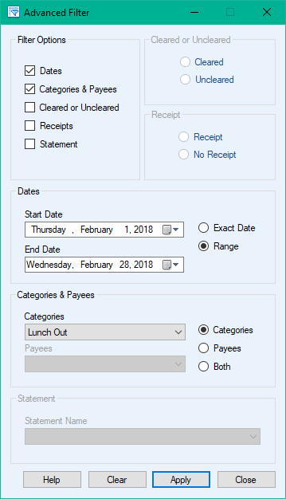

Advanced Filter

 Advanced Filter allows you to search for anything in your ledger. You can narrow down results using any combination of filter options. Once you have found the transactions you want you can
edit them just as you normally would. To start your filtered search follow the steps below.
Advanced Filter allows you to search for anything in your ledger. You can narrow down results using any combination of filter options. Once you have found the transactions you want you can
edit them just as you normally would. To start your filtered search follow the steps below.
- Click the
 Advanced Filter button (also found in Tools) to show the window.
Advanced Filter button (also found in Tools) to show the window.
- Choose the parameters you want to use for searching in Filter Options. Once you have chosen your parameters specify their values in the corresponding boxes below, then click the Apply button to filter your ledger.
- If you want to clear the filters and reset your ledger click the Clear button.
- When you are done using Advanced Filter click the Close button and your ledger will be reset.